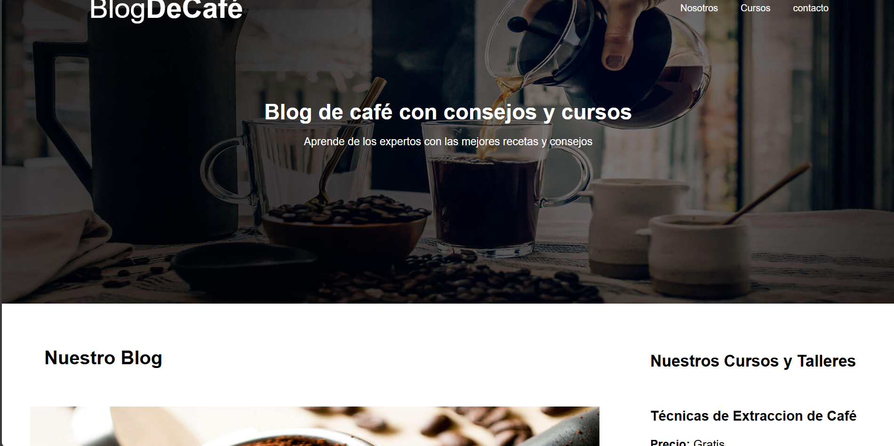
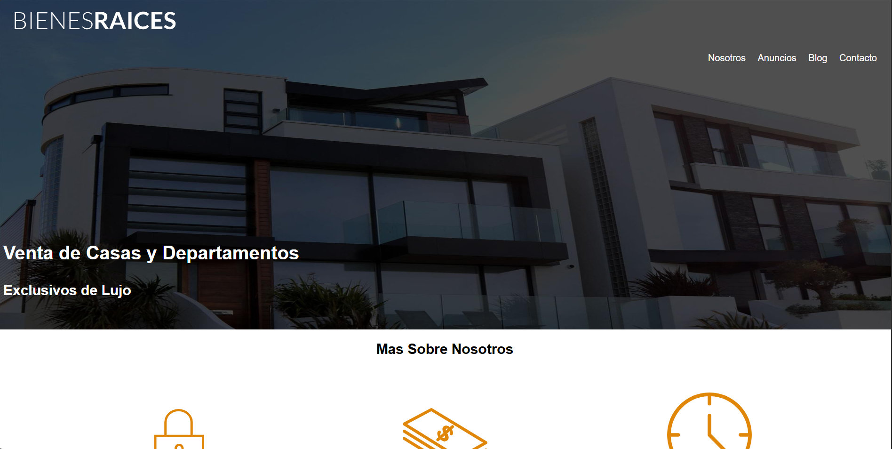
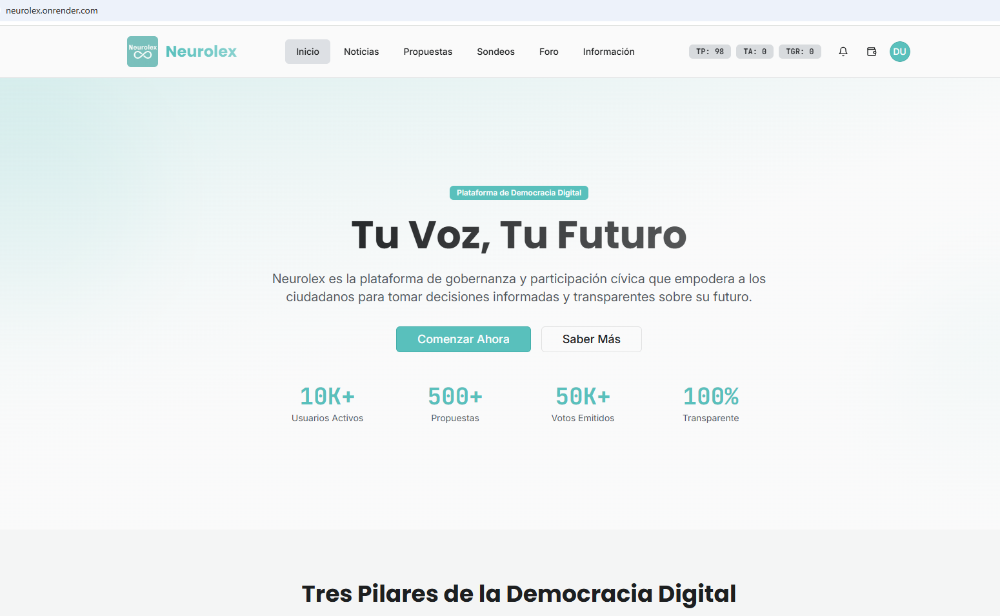

Diseñador, Desarrollador Frontend
Diseño y programo experiencias digitales simples, efectivas y visualmente atractivas. Disfruto transformar ideas en productos funcionales que conectan con las personas.

Diseño y programo experiencias digitales simples, efectivas y visualmente atractivas. Disfruto transformar ideas en productos funcionales que conectan con las personas.
Hace un par de años comencé mi camino en el diseño y desarrollo web. Desde entonces he trabajado en proyectos personales, colaborado con pequeños negocios y aprendido muchísimo sobre cómo crear experiencias digitales que se sientan bien. Soy curioso, me gusta aprender cosas nuevas y siempre busco mejorar un poco más cada día.

Espacio digital dedicado a los amantes del café, donde se comparten artículos sobre métodos de preparación, tipos de granos, cultura cafetera y reseñas de productos. Con un diseño cálido y minimalista, el blog busca transmitir la esencia del café artesanal y ofrecer una experiencia de lectura agradable y visualmente atractiva.

Sitio web moderno y funcional diseñado para la publicación y búsqueda de propiedades en venta o arriendo. Incluye un catálogo con filtros avanzados, galerías de imágenes, fichas detalladas de cada inmueble y un formulario de contacto directo con los agentes. Su diseño es totalmente responsivo y optimizado para brindar una experiencia fluida.

Plataforma informativa enfocada en el análisis del comportamiento político desde la perspectiva de la neurociencia y la psicología social. A través de artículos, infografías y debates, promueve la comprensión de cómo las emociones, la percepción y el lenguaje influyen en la toma de decisiones políticas y en la participación ciudadana.

Espacio digital dedicado a los amantes del café, donde se comparten artículos sobre métodos de preparación, tipos de granos, cultura cafetera y reseñas de productos. Con un diseño cálido y minimalista, el blog busca transmitir la esencia del café artesanal y ofrecer una experiencia de lectura agradable y visualmente atractiva.

Espacio digital dedicado a los amantes del café, donde se comparten artículos sobre métodos de preparación, tipos de granos, cultura cafetera y reseñas de productos. Con un diseño cálido y minimalista, el blog busca transmitir la esencia del café artesanal y ofrecer una experiencia de lectura agradable y visualmente atractiva.
Espacio digital dedicado a los amantes del café, donde se comparten artículos sobre métodos de preparación, tipos de granos, cultura cafetera y reseñas de productos. Con un diseño cálido y minimalista, el blog busca transmitir la esencia del café artesanal y ofrecer una experiencia de lectura agradable y visualmente atractiva.

Valoro las estructuras de contenido simples, los patrones de diseño limpios y las interacciones bien pensadas.
Diseño UX, Diseño UI, Diseño web, Aplicaciones, Identidad visual y logotipos.
Affinity Designer Figma Lápiz y papel Sketch
Disfruto desarrollar proyectos desde cero y transformar ideas en experiencias funcionales y dinámicas dentro del navegador. Busco siempre la eficiencia, la escalabilidad y la excelencia visual en cada línea de código.
HTML, Pug, Slim, CSS, Sass, Git
Herramientas y frameworks:Astro JS Bitbucket Bootstrap Bulma CodeKit GitHub Netlify Tailwind CSS Visual Studio Code

Apasionado por crear arquitecturas sólidas, seguras y escalables que respalden aplicaciones modernas y de alto rendimiento. Disfruto optimizar procesos, estructurar bases de datos eficientes y conectar sistemas de manera fluida.
JavaScript (Node.js), Python, PHP, SQL, NoSQL, APIs RESTful
Express.js MongoDB PostgreSQL MySQL Docker GitHub Actions Firebase AWS / Netlify Functions